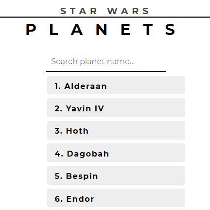
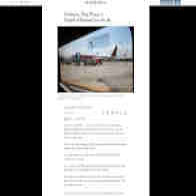
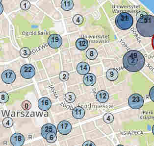

Projects
React shop demo
E-commerce-like webite with the charity topic.
[React] [Bootstrap]
source

Angular 5 demo
Star Wars planets list made while training basic Angular skills. Website is using 3rd party API, pagination, filter and routing.
[Angular5] [TypeScript] [API] [SCSS]

BlackSides - Firefox extension
Browser addon creating customisable black vertical stripes to isolate reading area for less eye strain
[JS]
source

Verturillo Warsaw bike map
What differentiates this map from others is bikes numbers visible directly in the markers. This way you get useful information on first sight.
[JS] [MapBox] [API]
source
Simple eye training game
Exercise for sight training. Spot barely visible special Gabor's patch. According to some sources it can improve vision.
[JS]
Some ideas to spare
To much ideas in my head, here are some ideas someone might find interesting to develop:
[App] During recording normal video you can toggle slow motion for couple of seconds
[Service] Middleware between buying and payment transaction system, which transforms part of actual payment to chosen charity.
[Gear/App] Physical or software trackball for bigger phones
[Browser Extention?] "TL;DR" - Crowdsourcing text sumups of every article or video added to webpage while viewing it
[App?] Wrap-up of information if something significant changed in any installed app after auto update
[Neural Networks] Music style transfer (like Artistic style transfer)
Phone keyboard app which also suggests synonyms